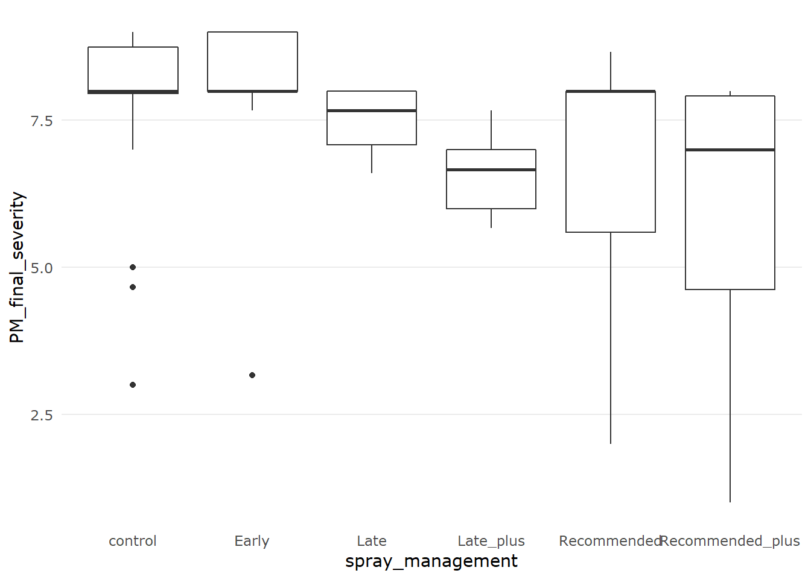

6 Meta-analysis of powdery mildew severity
Which trials don’t have all the required variance information?
unique(PM_MB_dat_full[is.na(PM_MB_dat_full$disease_error),
c("trial_ref", "location", "year")])## trial_ref location year
## 25 mung1516/01 Hermitage 2016
## 32 mung1516/02 Kingaroy 2016Eliminate trials with out disease severity variance.
PM_sev <-
PM_MB_dat_full %>%
filter(is.na(disease_error) == FALSE)Are all the reported disease variance the same type?
unique(PM_sev[,"D_error_type"])## [1] "stdev" "lsd (P=0.05)"Now we have eliminated 2 trials do all spray management categories have sufficient replications
table(PM_sev$spray_management)##
## Late_plus Late Recommended_plus Recommended
## 13 15 38 25
## Early control
## 13 36Convert variance to the same measure
PM_sev <-
PM_sev %>%
mutate(
d_vi =
case_when(
D_error_type == "stdev" ~ disease_error ^2,
D_error_type == "lsd (P=0.05)" ~
(replicates * ((disease_error / 1.96) ^2) /2)/replicates
),
id = row_number(),
spray_management = fct_relevel(spray_management,sort)
) Inspect raw disease severity scores
PM_sev %>%
ggplot(aes(x = spray_management, y = PM_final_severity)) +
geom_boxplot()
Inspect for a normal distribution of disease severity
hist(PM_sev$PM_final_severity)
Let’s get started with the analysis by first finding the best model fit that answers our research question.
When, in relation to PM establishes in the crop, should farmers begin spraying mungbean to obtain the highest fungicide efficacy for lowering disease severity: before PM establishing, immediately after first sign of PM establishing, or after PM has become established in the crop.
A secondary question to this aim is: does a second spray increase the efficacy?
To do this, in our model:
Powdery mildew severity 1-9 scale
Trial, which resolves combinations of categorical variables: year, location, row spacing, fungicide dose and cultivar; is set as a random intercept
We will investigate the effect size of our treatment - spray management,
PMsev_mv <- rma.mv(
yi = PM_final_severity,
d_vi,
mods = ~ spray_management,
method = "ML",
random = list( ~ spray_management | trial, ~ 1 | id),
struct = "UN",
control = list(optimizer = "optim"),
data = PM_sev
)## Warning in rma.mv(yi = PM_final_severity, d_vi, mods = ~spray_management, :
## There are outcomes with non-positive sampling variances.## Warning in rma.mv(yi = PM_final_severity, d_vi, mods = ~spray_management, : 'V'
## appears to be not positive definite.## Warning: Some combinations of the levels of the inner factor never occurred.
## Corresponding rho value(s) fixed to 0.summary(PMsev_mv)##
## Multivariate Meta-Analysis Model (k = 140; method: ML)
##
## logLik Deviance AIC BIC AICc
## -135.1026 Inf 324.2052 403.6295 337.7052
##
## Variance Components:
##
## estim sqrt nlvls fixed factor
## sigma^2 0.0382 0.1954 140 no id
##
## outer factor: trial (nlvls = 21)
## inner factor: spray_management (nlvls = 6)
##
## estim sqrt k.lvl fixed level
## tau^2.1 1.6334 1.2780 36 no control
## tau^2.2 3.2071 1.7908 13 no Early
## tau^2.3 0.8303 0.9112 15 no Late
## tau^2.4 0.0635 0.2520 13 no Late_plus
## tau^2.5 4.5399 2.1307 25 no Recommended
## tau^2.6 9.5744 3.0943 38 no Recommended_plus
##
## rho.cntr rho.Erly rho.Late rho.Lt_p rho.Rcmm rho.Rcm_
## control 1 0.9426 0.9839 0.9990 0.9496 0.8554
## Early 0.9426 1 0.9802 0.0000 0.8799 0.9789
## Late 0.9839 0.9802 1 0.9871 0.9010 0.9203
## Late_plus 0.9990 0.0000 0.9871 1 0.9537 0.8751
## Recommended 0.9496 0.8799 0.9010 0.9537 1 0.7997
## Recommended_plus 0.8554 0.9789 0.9203 0.8751 0.7997 1
## cntr Erly Late Lt_p Rcmm Rcm_
## control - no no no no no
## Early 7 - no yes no no
## Late 9 6 - no no no
## Late_plus 4 0 1 - no no
## Recommended 17 6 9 1 - no
## Recommended_plus 15 6 9 1 15 -
##
## Test of Moderators (coefficients 2:6):
## QM(df = 5) = 220.0755, p-val < .0001
##
## Model Results:
##
## estimate se zval pval ci.lb
## intrcpt 7.5567 0.2880 26.2354 <.0001 6.9921
## spray_managementEarly -0.7685 0.2027 -3.7918 0.0001 -1.1658
## spray_managementLate -0.6866 0.1222 -5.6204 <.0001 -0.9261
## spray_managementLate_plus -1.2675 0.2474 -5.1231 <.0001 -1.7525
## spray_managementRecommended -1.0476 0.2670 -3.9232 <.0001 -1.5710
## spray_managementRecommended_plus -3.2426 0.5315 -6.1006 <.0001 -4.2844
## ci.ub
## intrcpt 8.1212 ***
## spray_managementEarly -0.3713 ***
## spray_managementLate -0.4472 ***
## spray_managementLate_plus -0.7826 ***
## spray_managementRecommended -0.5243 ***
## spray_managementRecommended_plus -2.2008 ***
##
## ---
## Signif. codes: 0 '***' 0.001 '**' 0.01 '*' 0.05 '.' 0.1 ' ' 1All spray schedules were effective at lowering the disease severity at the end of the season
source("R/simple_summary.R") #function to provide a table that includes the treatment names in the contrasts
contrast_Ssum <-
simple_summary(summary(glht(PMsev_mv, linfct = cbind(
contrMat(rep(1, 6), type = "Tukey")
)), test = adjusted("none")))
contrast_Ssum## contrast coefficients StdErr Zvalue
## 2 - 1 Early - control -8.32520099 0.2823342 -29.4870476
## 3 - 1 Late - control -8.24328576 0.3869340 -21.3041127
## 4 - 1 Late_plus - control -8.82420621 0.5273920 -16.7317789
## 5 - 1 Recommended - control -8.60429454 0.2593109 -33.1813895
## 6 - 1 Recommended_plus - control -10.79926949 0.4576688 -23.5962538
## 3 - 2 Late - Early 0.08191523 0.2315788 0.3537251
## 4 - 2 Late_plus - Early -0.49900522 0.3715276 -1.3431173
## 5 - 2 Recommended - Early -0.27909355 0.2966148 -0.9409292
## 6 - 2 Recommended_plus - Early -2.47406850 0.3536671 -6.9954726
## 4 - 3 Late_plus - Late -0.58092045 0.1851446 -3.1376588
## 5 - 3 Recommended - Late -0.36100879 0.3470900 -1.0401015
## 6 - 3 Recommended_plus - Late -2.55598374 0.5558565 -4.5982802
## 5 - 4 Recommended - Late_plus 0.21991166 0.4502255 0.4884478
## 6 - 4 Recommended_plus - Late_plus -1.97506329 0.6852424 -2.8822839
## 6 - 5 Recommended_plus - Recommended -2.19497495 0.5117067 -4.2895177
## pvals sig
## 2 - 1 0.000000e+00 ***
## 3 - 1 0.000000e+00 ***
## 4 - 1 0.000000e+00 ***
## 5 - 1 0.000000e+00 ***
## 6 - 1 0.000000e+00 ***
## 3 - 2 7.235449e-01
## 4 - 2 1.792340e-01
## 5 - 2 3.467412e-01
## 6 - 2 2.643663e-12 ***
## 4 - 3 1.703030e-03 **
## 5 - 3 2.982927e-01
## 6 - 3 4.259927e-06 ***
## 5 - 4 6.252327e-01
## 6 - 4 3.948038e-03 **
## 6 - 5 1.790615e-05 ***par(mar = c(5, 13, 4, 2) + 0.1)
plot(glht(PMsev_mv, linfct = cbind(contrMat(rep(
1, 6
), type = "Tukey"))), yaxt = 'n')
axis(
2,
at = seq_along(contrast_Ssum$contrast),
labels = rev(contrast_Ssum$contrast),
las = 2,
cex.axis = 0.8
)